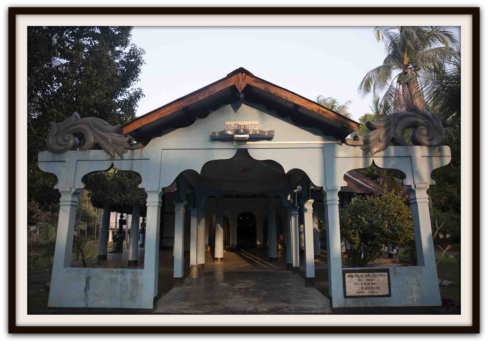
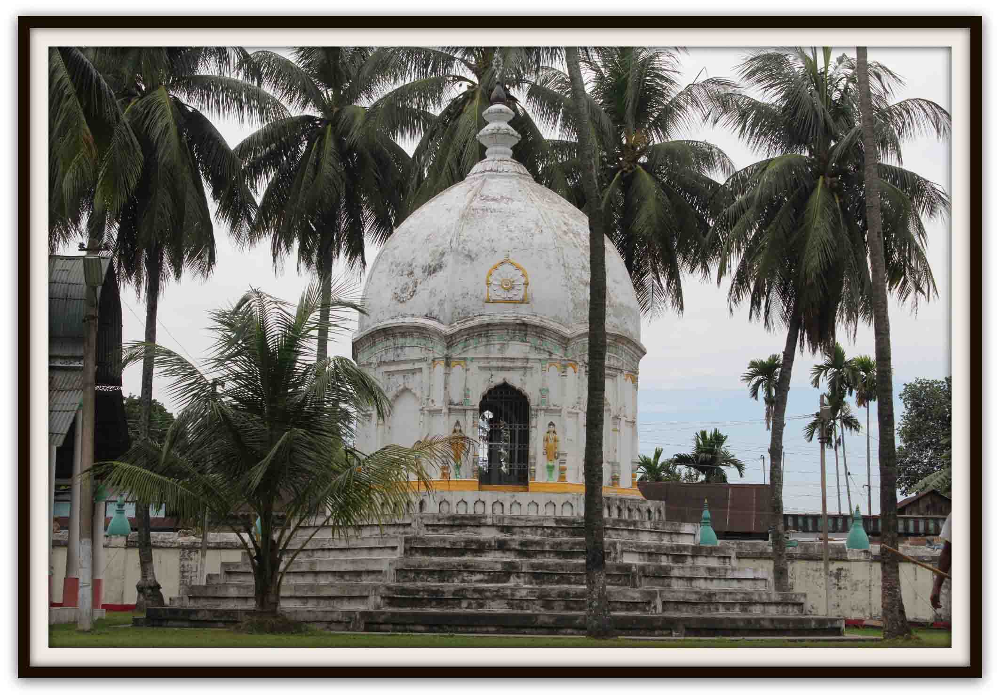

ABOUT US
THE ORGANISATION
The ability to evolve is a magnificent feature of any society or a state. Assam was plagued by the presence of superstition, religious discrimination and social inequality in the early part of the 15th century. There was social unrest; cultural divide, and ethnic hatred was palpable; the realm of religion was used as a tool to sacrifice the lives of people and animal alike. “Glaani” or perpetual decline of the ethos of religion engulfed our society.
In the aftermath of such a cataclysmic period in history of Assam, a ray of hope emerged as an answer to such calamity. The great Saint Mahapurush Srimanta Sankardeva assiduously carved a fundamental change in the mindset of his devotees, by preaching Vaishnavite religion. He was able to penetrate the unholy spirits by teaching, cultivating and harboring the “Hari Naam” which paved way to complete devotion and sacrifice by way of singing and praying the ever transcending life story of Lord Krishna. The Mahapurush industrially designed and moved forward with this revolution, by way of “Vaishnav Sahitya”, “Borgeet” “Nritya”, “Ankia Bhaona” a unique collection of incredible gems which enriched the very soul of Assam. The river like flow of his preaching has had a far reaching impact on the lives of millions of people in Assam, who could at length throw away the darkness, evil mindsets and “Adhormo”.
Through the passage of such teachings and the refinement of culture, our society has also evolved. After the great Saint passed away, his chief disciple Mahapurush Madhavdeva became the successor to the former’s movement. Madhavdeva, inspired by the holy teachings of Sankardeva, further enriched the Vaishnavite religion and culture. He added to the already enumerable deposits of Borgeet and Ankia Bhaona. He also created the “Naam Ghosa”another eternal sunshine of our Vaishnavite treasure.
In order to spread the wings of the great movement, the two Mahapurushas created and popularized the “Sattras” which were the assemblies of the great gurus, saints and devotees enraptured by the magnetic connect of Vaishnavite principles. Sattras are essentially places of devotion, Naam-Kirttan and a holy place to practice the great teachings of the two Mahapurushas in order to attain the proximity to Lord Vishnu.
The development and growth of these institutions however saw some disruptions after the departure of Mahapurush Sankardeva and Madhavdeva. The urge to create more room and dominion among their disciples and kith and kin, created a rift and division for their own accord. This division adversely affected the unity among the torchbearer’s Vaishnavite religion and they headed their own path to create many Sattras across various places in Assam. This also paved way for the birth of many “Sanghotis” a cult based on the Sutradhars of each of those Sattras, like “Purush Sanghoti” created by Purushuttam Thakur, the great grandson of Srimanta Sankardeva.
The roots of those Sattras and their multiplication made sure that the light of the Vaishnavite religion is forever enlightened with glory. However, the bigger aspect of the unity among people was still at stake - there was no such authority or organization which would oversee the functions of the Sattras. There was acute lack of an institution to start a level playing field in the unification of the Sattras. The status quo continued till many more centuries and trespassed through many generations. There were however several attempts to achieve such a crucial goal of keeping the sanctity of the Vaishnavite religion alive, and achieving harmony among the divided cults. It had failed due to lack of will and a failure to create another movement to achieve cultural exchange and universal acknowledgement of the principles and teaching of the great Mahapurushas.
In the year 1915, a religious institution by the name of “Santo Sanmiloni” evolved in the region of Jorhat, Nogaon, Tezpur, Sivasagar, Golaghat, Majuli, Lakhimpur etc to discuss the socio-religious issues plaguing our society. This institution however, lacked representation of the devotees and people from the Sattras, and hence issues pertaining to the Sattras could not be addressed or resolved.
The establishment of this umbrella organization paved the way for a religious uprising in Assam for many years. It also contributed to the unity among, at least, the like minded gurus and Satradhikars of the Sattras and aimed at providing a platform of cultural, social and religious engagements. This institution, which is now popular as the Asom Sattra Mahasabha, has been the overseer to the cause of Sattras, their safeguarding, protection and custody of the Vaishnavite cult, and has, also transformed itself through the ages. In spite of the need to change in form, the mission of Asom Sattra Mahasabha has remained consistent and largely confined to the unification of the Sattras, and to bring about a cultural, social and spiritual advancement through the medium of the Sattras.
Vision
To achieve peace and harmony amongst the people of Assam in general, the Sattra with their disciple and followers and associated institutions in particular and work altruistic towards their social, moral, cultural and spiritual development without any political and communal inclination and based on spiritual philosophy of Mahapurusha Srimanta Sankardeva through Bhakti Marg of ‘Ek-xarana mahapurushiya Vedic Vaishnava Bhagavati Naam Dharma’.
Mission Statement
To protect and promote Sattra Cultural and tradition founded by Srimanta Sankardeva, Sri Madhabdeva and other succeeding Gurus of Neo-Vaishnavite faith in Assam, sustaining the role of Sattra as a vibrant unit of the Assamese society towards general well being and spiritual and moral development of its followers.
The organization will work towards preservation of Sattriya Sanskriti for future generation and to protect vulnerable intangible culture by imparting adequate training within the Sattra framework.
It will be endeavor of Asom Sattra Mahasabha to preserve the artifacts and manuscripts of the Sattra and to translate and publish the religious books of the Sattra to other languages.
To affect this mission, Sattra Mahasabha has laid down following major objectives:
* Preservation of the Sattras and helping in achieving laid down goals.
* To take up new artistic and cultural activities for the followers of the Sattras.
* To preserve and enable the endeavors of educational, cultural activities “Naam-Kirttan”, “Nritya-Geet” & ”Bhaona”.
* To oversee the development of the spiritual, mental, sociological, and educational spectrums and to help in the formation of villages.
* To be the guardian, custodian of ancient texts and books and their publications.
KEY ACTIVITIES
Asom Sattra Mahasabha, is a registered socio-cultural organization that serves as the umbrella organization for the Sattra of Assam which aims at preserving and propagating the religious and socio-cultural teachings of Mahapurusha Srimanta Sankardeva. Since its inception in 1915, as Santa Sanmilani, Sattra Sangha in 1945 and Sattra Mahasabha in 1990, the organization has been ardently engaged in the development and spread of Sattriya Sanskriti (Culture). There are 862 Sattra in the state of Assam, and Koch Behar. There are several Naamghar in Meghalaya, Arunachal Pradesh and Nagaland, practicing Sattriya Sanskriti for a very long time.
In the words of Dr. Arshiya Sethi, “What makes the Asom Sattra Mahasabha a significant institution, is the fact that it emerged out of self reflection, to serve a specific self determined agenda. It is motivated by an idealist goal, seeks out governmental and non-governmental partners when necessary, and it works methodically through organizational practices”.
ASM has been able to draw attention to all the problems that the Sattra are facing, be it theft of valuable religious objects, illegal occupation of their lands and conversions to other faiths. The thefts are being described by the ASM as a national loss. In response to conversion of persons to other faith through the lure of money or otherwise, the ASM has taken up reconversion process as well.
The Preservance and spread of spiritual way of life preached by Mahapurusha Sankardeva is being continued by ASM in the ‘Naamghar’ constructed in Jorhat that provides necessary infrastructure for the organization to conduct regular official activities. A well constructed auditorium also provides ample opportunity to further the cause of other communities. It is worth mentioning that the plot of Land for construction measuring approximately one acre is donated by Assam Tea Company.
Asom Sattra Mahasabha has encouraged the preservation of old manuscripts and books written by earlier Gurus. Several books on Sattra are published by ASM for the use by the people of Assam as well as outside Assam. One of the main treaties of Vaishnavism in Assam is ‘the Kirttana’. This Holy Book has been translated into English by Late Chandrakanta Mahanta. Asom Sattra Mahasabha published this book in 1990. The second edition has been published in December 2014 under the management of Asom Sattra Mahasabha, New Delhi Chapter. Under the organization, Prakashan Samiti, the publications division, takes care of bringing out books, publicity material and an annual magazine, the SattraManjari.
With the aim of contributing to and preserving the peace and unity in the society, Asom Sattra Mahasabha organized “Shanti Yatra” (peace march) throughout Assam in the year 1999 -2000.Asom Sattra Mahasabha by its assiduous zeal, established one Music College at Rajabari, Jorhat named “Asom Sattriya Sangeet Mahavidyalay” under Dibrugarh University of Assam.As a result of the efforts made by Asom Sattra Mahasabha and the few eminent personalities of Sattriya Culture, including Dr. Bhupen Hazarika, Sattriya Nrittya has been recognized as a classical form of dance in India by Sangeet Natak Academy on 15th November , 2000.
The mark the date of recognition, Asom Sattra Mahasabha has been observing this day as “Sattriya Sanskriti Divas” every year, wherein different attributes of Sattriya Sanskriti are exhibited in Assam and New Delhi.
To encourage the involvement of other communities into Sattriya Sanskriti, Asom Sattra Mahasabha is organizing “Setubandha Bhaona Samaroh”, where different communities of Assam participate in the performance of Ankia Bhaona. This event was first held in 2003 at Guwahati with the association of Srimanta Foundation and since then, the event has been organized in regular intervals by the Asom Sattra Mahasabha.
Asom Sattra Mahasabha established “Pariksha Parishad” and “Sattriya Sanskriti Charcha Kendra” with a view to preserving and propagating Sattriya Culture and heritage. With a number of training centers under this institute, a well articulated syllabus for academic degrees is run through to standardize the various aspects of Sattriya Sanskriti.
Asom Sattra Mahasabha has been instrumental in allocation and distribution of Central Government funds towards preservation of several Sattra in Assam. The proper interactive representation of ASM on behalf of the Sattra has resulted into the recognition of the difficulties faced by the Sattra and their requirements towards performance of duties to the society. The organization has taken up various steps towards reacquiring of land belongs to Sattra after taking legal and political actions against the encroachers and land illegally occupied by migrants. The Mahasabha has supplied documentary evidence to the government for nearly 2000 acres of land belonging to 39 Sattra of Assam which have been illegally occupied. The reduction in revenue from land has become a major financial hurdle in the progress of the Sattra.
In order to know more about the project, please contact us as per the details provided in the Contacts page of the website.
ORGANISATION STRUCTURE
In order to perform the meticulous responsibility of maintaining and running a cultural set-up, preserve the Sattras and function as an umbrella organization of all Sattras, looking after the day to day operations of promoting the Sattriya cult, Asom Sattra Mahasabha relies heavily on a well-defined structure. Since the subjects and areas covered is vast, the organization set-up is also robust. Given below is the list of Executive Members of Asom Sattra Mahasabha, who usually have a term of 2 consecutive years. The President of the Mahasabha is elected through a voting process participated by the executive committee members of the different district level chapters of Asom Sattra Mahasabha.
The newly elected office bearers of Asom Sattra Mahasabha have taken charge on 30th Aug 2015. Following is a listing of the members of the newly elected committee.
| Charge / Title | Name | Address | Contact Number |
|---|---|---|---|
| President | Sri Jitendra Nath Pradhani | Satradhikar, Sri Sri Dham Ramraikuthi Sattra Samiti (Satrasal) | 9085378736 |
| Working President | Sri Haridev Goswami | Satradhikar, Garamur Saru Sattra, Majuli | 9435203306 |
| Vice President | Sri Nripen Roy | Bongaigaon | 9435985055 |
| Vice President | Sri Dwijendra Narayan Goswami | Nagaon | 9435060570 |
| Vice President | Sri Bhaba Goswami (Advocate) | Jorhat | 9435095818 |
| Vice President | Sri Akhil Mahanta | South Kamrup | 8011744376 |
| Vice President | Sri Krishna Kanta Mahanta (Advocate) | Guwahati | 9864065699 |
| Vice President | Sri Munindra Mahanta | Dhemaji | 9577804705 |
| General Secretary | Sri Kusum Kumar Mahanta | Guwahati | 9706047998 |
| Secretary | Sri Hemanta Bijoy Mahanta | Bishwanath Chariali | 9859216878 |
| Secretary | Sri Achyut Barman | Bajali | 9864394106 |
| Secretary | Sri Dipak Baruah | Charaideu | |
| Secretary | Sri Ajit Kumar Das | Goalpara | 9864647722 |
| Treasurer | Sri Bhubaneshwar Mahanta | Morigaon | 9508088933 |
| Organising Secretary | Sri Bhaben Goswami | Dhakuakhana | |
| Organising Secretary | Sri Udhav Das | Barpeta | |
| Organising Secretary | Sri Pradip Kumar Nath | Sonitpur | |
| Organising Secretary | Sri Pradip Goswami | New Delhi | 9811259078 |
| Cultural Secretary | Sri Ajoy Baruah | Sivasagar | 7896253883 |
| Magazine Secretary | Sri Kishore Kumar Das | Bajali | 9954256914 |
| Convenor, Trust Fund | Sri Babulal Gaggar | Jorhat | 9435052427 |
| Convenor, Nritya Sanchay Puji | Sri Ranjan Mahanta | Sivasagar | 9435355120 |
| Secretary, Pariksha Parishad | Sri Horendra Nath Mahanta | Jorhat | 9435096825 |
| Secretary, Central Office | Sri Horendra Nath Mahanta | Jorhat | 9435096825 |
The listing of the previous executive committee members (2013 till 2015) are given velow.
President
Sri Lila Kanta Mahanta0-80115-09256
Satradhikar, Sri Sri Borkharpar Sattra Sivasagar
It may be mentioned that recently Sri Jitendra Pradhani of Sri Sri Chatrasal Sattra has been unanimously elected as the new President of Asom Sattra Mahasabha, who is expected to take charge in the early part of 2015.
Executive President
Sri Sri Haridev Goswami0-94352-03306
Satradhikar, SriSri Garmur Sattra Majuli, Jorhat
Secretary General
Sri Jibeswar Dev Goswami094350-68689
Deka Satradhikar, Sri Sri Mahara Sattra Uttar Hoibor Gaon, Nagaon
Vice-President(s)
1. Sri Ripu Mahanta, Guwahati2. Sri Hem Chandra Tamuly, Jajori
3. Dr Tarun Sarmah, Lakhimpur
4. Sri Him Kanta Buragohain, Charaidew
5. Sri Rohit Ch. Mahanta, Jorhat
6. Sri Nripen ch Roy, Bongaigaon
Secretary
1. Sri Dipankar Mahanta, Guwahati2. Sri Achyut Barman, Bojali
3. Sri Rabin Baruah, Tinsukia
4. Sri Ajoy Baruah, Jorhat
Treasurer
Sri Sarbananda Mahanta, NagaonOrganising Secretary
1. Sri Akhil Mahanta, Kamrup2. Sri Pradip kr. Goswami, New Delhi
3. Sri Nagendra Deva Goswami, Dhemaji
4. Sri Hemanta Bijoy Mahanta, Biswanath Chariali
5. Sri Jadav Mahanta, Morigaon
Miscellaneous Roles
Cultural Secretary: Sri Murulikanta Mahanta, JorhatPatrika Sampadak: Sri Nripen Roy, Borpeta
Convenor(Trust Fund): Sri Babulal Gaggar, Jorhat
Convenor (Nitya Sanchay Puji): Sri Ranjan Mahanta, Sivasagar
Public Affairs: Sri Kusum Mahanta, Guwahati
Spokesperson: Sri Krishna Kanta Mahanta, Guwahati
Office Secretary: Sri Harendra Nath Mahanta, Jorhat
THE CONSTITUTION
SATTRIYA SANSKRITI CHARCHA KENDRA

“Sattriya Sanskriti Charcha Kendra” was established by Asom Sattra Mahasabha in 1984. Initially the training of young students in different aspects of Sattriya Sanskriti started in the head office of the organization and subsequently several music schools were set up under its jurisdiction. The basic objective of the schools is to train the students in Sattriya Nrittya, Borgeet and Khol-badan and other related music and dance of Sattriya Sanskriti. For a proper academic curriculum, a syllabus with five year duration is drawn up by Asom Sattra Mahasabha. After completion of the course in respective stream, the student is conferred an academic honour as “Visharad Degree” equivalent to (B.Mus) by Asom Sattra Mahasabha.
An examination board called “Pariksha Parishad” was formed to oversee the smooth functioning of the examination as per the syllabus designed by the Mahasabha. At present, approx. 91 Sattriya Vidyalayas are functioning under Asom Sattra Mahasabha and they are situated across the length and breadth of the state. The person in charge of the examination board, the “Pariksha Sachib”, is to supervise the teachings of the schools as per Syllabus, conducting examination as per the norms etc. The present “Pariksha Sachib” is Sri Horendra Nath Mahanta and for any information about “Pariksha Parishad” he may be contacted at +91 94350-96825.
These institutions are run by the interested persons under the guidance of Mahasabha and have not received any financial help from the Government. As per the rule, the institution will run the course as per the syllabus given and appear for the examination conducted by the examination board of Mahasabha. ASM is also working with Dibrugarh University to recognize the pass out students of the Sattriya Sanskriti Charsha Kendra for getting employment opportunity in the academic courses run for Music and dance subject in the University.
The Kendra has to train students as per syllabus given by ASM for a five year course. In these five year course, there is examination conducted by the separate board of examiners consisted of specialists and authorities on the subject. The examination is conducted both on theory as well as practical. There is minimum passing Marks for each year for theory and practical.
For ‘Gayan’ course – for the first year, the basics of classical music is taught along with Ashowari, Dhansri and Basanta Raga. In the singing part, the recitation of Ghoxa, in Chabi, Dulari and Lessari is taught. In the second year of the course, Raga Shyam, Sindhura, Bhatiyali and Kalyan are taught in detail. At this stage, use of Taal (cymbal) as instrument is taught so that it can be used in performing Kirttana. In the third year, Borgeet with various Ragas with Bhotima, Totaya and Chapaya are taught. In fourth and fifth year, higher levels of Ragas and their performance in different parts of the day are taught. Likewise there is detailed syllabus available for Bayan, and Sattriya Nrittya. The syllabus is prepared by Dr. Keshavananda devagoswami, Dr. Jagannath Mahanta, Padmashree Jatin Goswami and Sh. Punyabrat deva goswami. A detailed list of text book to be followed is also given.